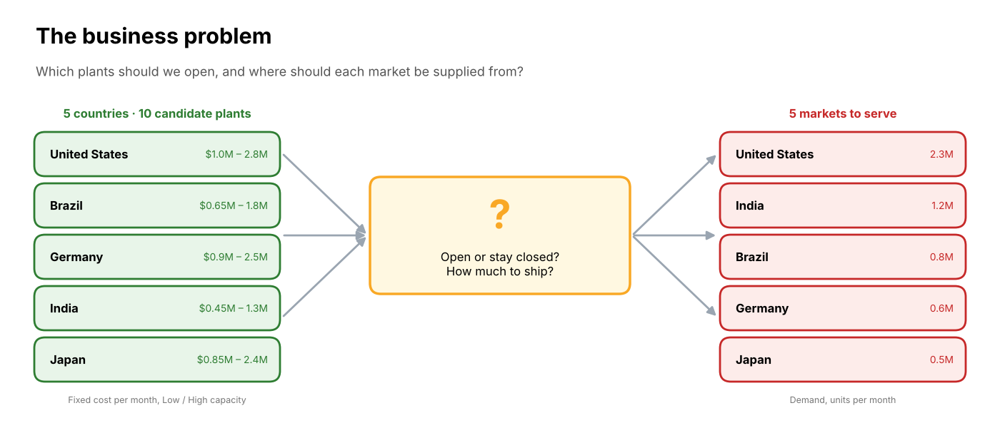
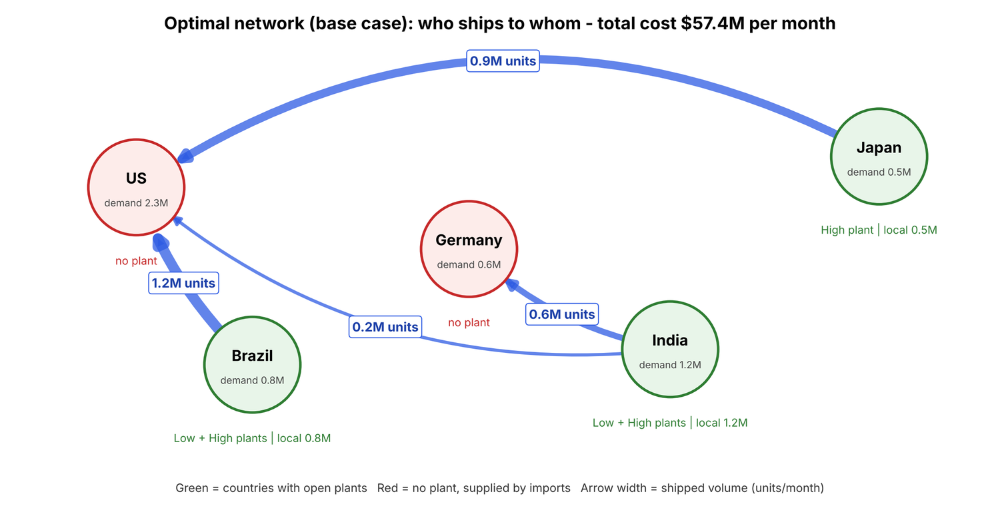
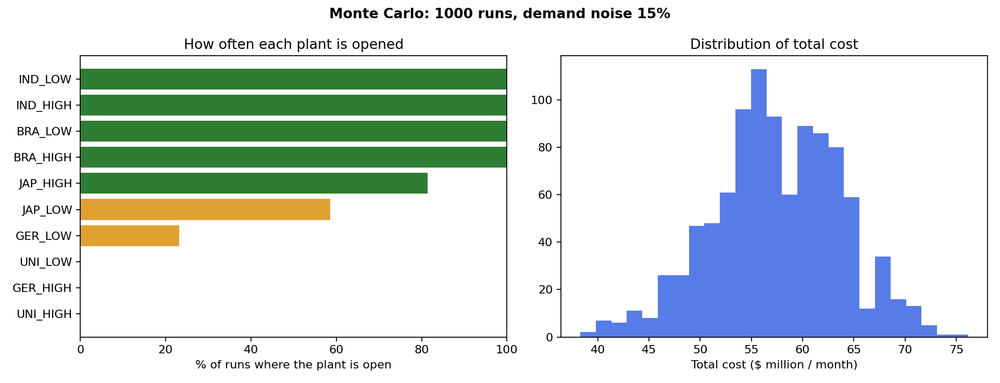

Supply Chain Network Design
Which plants should a company open, and how much should each ship? A linear programming model in Python, tested against uncertain demand with 1,000 Monte Carlo runs.
The business problem

Imagine a company that sells in five markets: the United States, Brazil, Germany, India and Japan. It can put a factory in any of those countries, small (500,000 units a month) or large (1,500,000). Nothing is free, though. Every open plant costs a fixed amount each month, on top of what it costs to make each unit and to ship it, by container, to each market.
Open everything and you waste money. Open too little and you either pay a fortune in freight or can't meet demand. So the question I wanted to answer is: which plants should be open, and how much should each send to each market, so that all demand is met at the lowest total monthly cost?
This is a classic facility location problem. It suits linear programming well, because both the cost and every limit can be written as straight sums of the quantities we control.
The data
Heads up: every number below is made up. I invented this data to practise the method, so don't read anything into the actual costs.
One container holds 1,000 units. There are 10 candidate plants (5 countries, 2 sizes each):
| Plant | Country | Type | Fixed cost ($/month) | Variable cost ($/unit) | Capacity (units/month) |
|---|---|---|---|---|---|
| UNI_LOW | United States | Low | 1,000,000 | 14 | 500,000 |
| UNI_HIGH | United States | High | 2,800,000 | 14 | 1,500,000 |
| BRA_LOW | Brazil | Low | 650,000 | 9 | 500,000 |
| BRA_HIGH | Brazil | High | 1,800,000 | 9 | 1,500,000 |
| GER_LOW | Germany | Low | 900,000 | 13 | 500,000 |
| GER_HIGH | Germany | High | 2,500,000 | 13 | 1,500,000 |
| IND_LOW | India | Low | 450,000 | 6 | 500,000 |
| IND_HIGH | India | High | 1,300,000 | 6 | 1,500,000 |
| JAP_LOW | Japan | Low | 850,000 | 12 | 500,000 |
| JAP_HIGH | Japan | High | 2,400,000 | 12 | 1,500,000 |
Monthly demand per market:
| Market | Demand (units/month) |
|---|---|
| United States | 2,300,000 |
| Brazil | 800,000 |
| Germany | 600,000 |
| India | 1,200,000 |
| Japan | 500,000 |
And freight in $ per container, with the origin country down the side and the destination across the top:
| Origin \ Destination | United States | Brazil | Germany | India | Japan |
|---|---|---|---|---|---|
| United States | 250 | 1,100 | 1,200 | 1,700 | 1,300 |
| Brazil | 1,050 | 250 | 1,400 | 1,900 | 2,000 |
| Germany | 1,150 | 1,300 | 250 | 1,100 | 1,231 |
| India | 1,650 | 1,900 | 1,100 | 250 | 850 |
| Japan | 1,300 | 2,100 | 1,250 | 900 | 250 |
The mathematical model
Any linear program boils down to three things: what you decide (variables), what you want to minimise or maximise (the objective), and the rules you have to respect (constraints). Here they are:
Decision variables
- \(y_p \in \{0,1\}\): equals 1 if plant \(p\) is opened.
- \(x_{pm} \ge 0\): units shipped from plant \(p\) to market \(m\).
The objective: lowest total monthly cost
$$\min \; \sum_p F_p\,y_p \;+\; \sum_p\sum_m \Big(V_p + \frac{S_{pm}}{U}\Big)\,x_{pm}$$Here \(F_p\) is the fixed cost, \(V_p\) the production cost per unit, \(S_{pm}\) the freight per container and \(U = 1000\) units per container. Dividing freight by \(U\) just turns it into a cost per unit, so everything is measured per unit.
Constraints
$$\sum_p x_{pm} \ge D_m \quad \forall m \qquad \text{(every market's demand is met)}$$ $$\sum_m x_{pm} \le \mathrm{Cap}_p\,y_p \quad \forall p \qquad \text{(capacity, and only open plants can ship)}$$The second rule is the one that does the real work. If \(y_p=0\), the right-hand side is zero, so a closed plant can't ship anything. If \(y_p=1\), the plant can ship up to its capacity.
Because some variables are yes/no (open or closed), this is technically a mixed-integer linear program, or MILP. You don't have to try every combination by hand: the solver prunes the bad options for you.
A tiny example
Say demand is 400,000 units. Plant A has a fixed cost of 100,000, production of 10 and freight of 1 per unit. Plant B has 300,000, 8 and 2. Using only A costs 100,000 + 400,000 × 11 = 4.5M. Using only B costs 300,000 + 400,000 × 10 = 4.3M. B wins even with the higher fixed cost, because each unit is cheaper. The solver makes this same trade-off across 10 plants and 5 markets at once.
The Python code
In plain steps, the whole thing looks like this:
load plants, markets, freight
create a yes/no variable per plant, and a flow variable per plant and market
objective: minimise fixed costs of open plants + (production + freight per unit) x flows
rule 1: for each market, total received >= demand
rule 2: for each plant, total shipped <= capacity x (1 if open, else 0)
solve, then read which plants are open and what each one shipsThe code mirrors the maths: declare the variables, write the objective, add the constraints, solve. I used PuLP (version 3.x) and read the three CSV files from above.
from pathlib import Path
import pandas as pd
import pulp
ROOT = Path(__file__).resolve().parents[1]
UNITS_PER_CONTAINER = 1000
plants = pd.read_csv(ROOT / "data/plants.csv").set_index("plant_id")
markets = pd.read_csv(ROOT / "data/markets.csv").set_index("market")
freight = pd.read_csv(ROOT / "data/freight.csv", index_col="origin")
# 1) model + variables
model = pulp.LpProblem("network_design", pulp.LpMinimize)
# (built with plain LpVariable(...) so it works across PuLP versions)
y = {p: pulp.LpVariable(f"open_{i}", cat="Binary")
for i, p in enumerate(plants.index)}
x = {(p, m): pulp.LpVariable(f"flow_{i}_{j}", lowBound=0)
for i, p in enumerate(plants.index)
for j, m in enumerate(markets.index)}
# 2) objective: fixed + (variable + freight per unit) * flow
model += (
pulp.lpSum(plants.loc[p, "fixed_cost_usd_month"] * y[p] for p in plants.index)
+ pulp.lpSum(
(plants.loc[p, "variable_cost_usd_unit"]
+ freight.loc[plants.loc[p, "country"], m] / UNITS_PER_CONTAINER) * x[(p, m)]
for p in plants.index for m in markets.index)
)
# 3) constraints
for m in markets.index: # demand
model += pulp.lpSum(x[(p, m)] for p in plants.index) >= markets.loc[m, "demand_units_month"]
for p in plants.index: # capacity, only if open
model += (pulp.lpSum(x[(p, m)] for m in markets.index)
<= plants.loc[p, "capacity_units_month"] * y[p])
# 4) solve + read results
model.solve(pulp.PULP_CBC_CMD(msg=False))
print("status:", pulp.LpStatus[model.status])
print("total cost:", round(pulp.value(model.objective)))
print("open plants:", [p for p in plants.index if y[p].value() > 0.5])To run it, install the packages with pip install "pulp<4" pandas and run python src/network_design_pulp.py. You should see status: Optimal and total cost: 57445000. One note: PuLP 4 changed how variables are created, so this version needs PuLP 3.x. The same script also runs the what-if scenarios in the next sections.
The optimal network
The solver opens five of the ten plants, for a total of $57.4 million a month: both plants in Brazil, both in India, and the large one in Japan. Nothing gets built in the US or Germany, even though the US is the biggest market. Here are the flows in units per month:
| Plant | United States | Brazil | Germany | India | Japan |
|---|---|---|---|---|---|
| BRA_LOW | 500,000 | 0 | 0 | 0 | 0 |
| BRA_HIGH | 700,000 | 800,000 | 0 | 0 | 0 |
| IND_LOW | 200,000 | 0 | 0 | 300,000 | 0 |
| IND_HIGH | 0 | 0 | 600,000 | 900,000 | 0 |
| JAP_HIGH | 900,000 | 0 | 0 | 0 | 500,000 |

It makes sense once you look at the table. Production sits where it's cheap (Brazil and India), and Japan's large plant sends most of its output to the US. Brazil covers its own market and ships the rest north, and India supplies itself and Germany.
What-if scenarios
The nice thing about having a model is that you can change an assumption and re-solve in seconds. I tried three scenarios:
| Scenario | Total cost / month | vs base | Plants opened |
|---|---|---|---|
| Base case | $57,445,000 | - | BRA_LOW, BRA_HIGH, IND_LOW, IND_HIGH, JAP_HIGH |
| Freight cost x5 | $71,450,000 | +24.4% | UNI_HIGH, BRA_LOW, BRA_HIGH, IND_LOW, IND_HIGH |
| India High-capacity fixed cost x2 | $58,745,000 | +2.3% | BRA_LOW, BRA_HIGH, IND_LOW, IND_HIGH, JAP_HIGH |
Freight cost x5
This mimics a shipping crisis. Total cost goes up by 24.4% and the network reshuffles: the Japanese plant closes and a large plant opens in the United States. When transport gets expensive, making things close to your biggest market beats making them cheaply far away.
India's large plant becomes twice as expensive to run
Cost goes up by only 2.3% and the network stays the same. That plant is still the cheapest way to serve India and Germany, so this decision doesn't depend much on that one number.
Monte Carlo: how robust is the network?
Everything so far assumes demand is known exactly, which is never true. To see how much that matters, I re-solved the model 1,000 times. Each time, I multiplied every market's demand by a random factor (normal distribution, mean 1, standard deviation 15%) and recorded which plants the solver chose to open.
for run in 1..1000:
demand_run = demand x random factor per market
solve the model with demand_run
record which plants are open and the total cost
report: % of runs in which each plant is open
| Plant | Open in % of runs |
|---|---|
| BRA_LOW, BRA_HIGH, IND_LOW, IND_HIGH | 100% |
| JAP_HIGH | 81.4% |
| JAP_LOW | 58.6% |
| GER_LOW | 23.2% |
| UNI_LOW | 0.1% |
| UNI_HIGH, GER_HIGH | 0% |
The four plants in Brazil and India are open in every single run, so that part of the decision is solid. Japan's large plant is open most of the time. The small plants in Japan and Germany are the real "it depends" decisions: they only make sense when demand happens to land in the right place. The total monthly cost averages $57.5M, and 90% of runs fall between $47.0M and $67.9M.
How many runs are enough? I ran 200 runs with two different random seeds and the percentages moved by only a few points, so 1,000 gives a steady picture.
PuLP versus Monte Carlo: what is the difference?
They are not rivals. PuLP is the tool that solves one planning problem. Monte Carlo is a way of using that tool again and again with random inputs, to see how far the answer can be trusted.
| PuLP (one solve) | Monte Carlo (1,000 solves) | |
|---|---|---|
| What it is | A library that builds the model and calls a solver (CBC) | A simulation method that re-runs the model with random demand |
| Question it answers | "With this demand, what is the cheapest network?" | "If demand moves around, which decisions still hold?" |
| Demand used | One fixed set of numbers | 1,000 random sets around the base (mean 1, standard deviation 15%) |
| Number of solves | 1 | 1,000 |
| Result | One answer: $57,445,000 per month, 5 plants open | A distribution: mean $57.5M (5th to 95th percentile $47.0M to $67.9M) and the % of runs in which each plant is open |
| How certain is it? | Exact for the assumed demand, but says nothing about risk | Shows which decisions are solid (Brazil and India plants: 100% of runs) and which depend on demand (JAP_LOW 58.6%, GER_LOW 23.2%) |
| Depends on | Nothing else | PuLP: the loop calls the same model every time |
| Use it when | You need a quick answer or a named scenario such as freight x5 | Real money is at stake and demand is uncertain |
In this project they work together: the Monte Carlo loop calls the same PuLP model that produced the base case. Their results are consistent. The base case costs $57.4M and the Monte Carlo average is $57.5M, a little higher. The five plants in the base case are the ones that the simulation opens most often. What the simulation adds is the range of possible costs, and the warning that the small plants in Japan and Germany are decisions that depend on how demand turns out.
Takeaways and next steps
- Once you write a planning question as variables, an objective and constraints, a few dozen lines of Python can answer it.
- The single optimal answer matters less than seeing how the network reacts when the assumptions change.
- A single optimal answer can be misleading. Monte Carlo shows which decisions hold up (Brazil and India) and which depend on how demand turns out (the small plants in Japan and Germany).
- After that, I'd like to wrap the model in a small web app or dashboard so anyone can change the assumptions without touching code.